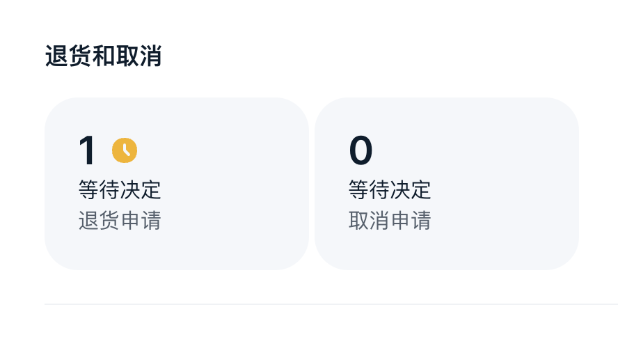
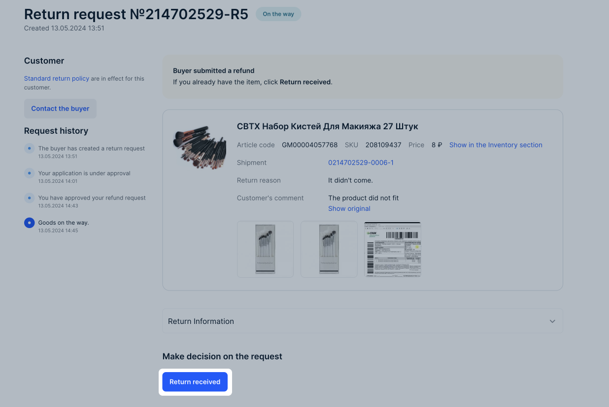
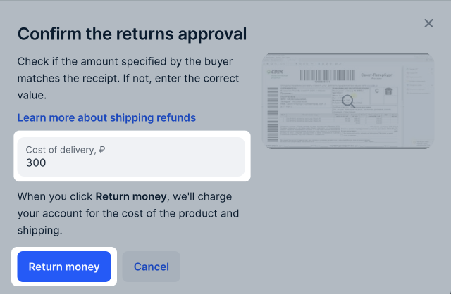

自2026年5月6日起，我们将关于退货的文章移至 单独部分 。
买家退货时限与条件
商品类目 |
质量合格商品的退货期限 |
质量不合格或对订单履约提出投诉时的退货期限 |
|---|---|---|
• 食品； •宠物饲料 |
不可退货 |
1 天 |
• 数字商品； •具有特定属性的商品 |
不可退货 |
7天 |
• 非定期出版物：书籍、册子、画册、地图类与乐谱类出版物、单页出版物、日历、宣传册、以技术载体复制的出版物； •个人卫生用品，例如牙刷、梳子、发夹、卷发器、假发、接发； •新年商品：人造圣诞树、电灯串、圣诞树装饰； •袜类、短袜、紧身袜、内衣、睡衣； •医疗用品 |
7天 |
7天 |
• 其他商品品类 |
15天 |
15天 |
质量合格商品的退货条件
买家可在以下情况下退回质量合格的商品：
商品外观完好；
无使用痕迹；
原厂包装未损坏；
购买电子设备时未安装或激活任何软件；
保留商品的消费属性且未过保质期；
买家需退回商品全套内容，例如两卷本书籍需同时退回两卷。
需要使用易燃燃料（如汽油或燃气）才能工作的商品，仅在燃料箱或燃料罐为空的情况下接受退货。
质量不合格商品的退货条件
买家可在以下情况下退货：
收到的商品型号、尺寸或颜色不符；
商品缺少部件；
商品已过期或在配送过程中受损；
商品为假货；
商品无法正常工作或性能异常。
如遇争议情况（错误分级 / 损坏），请联系客服并提供订单备货视频。
保修期内的退货
商品类目 |
卖家是否设置保修 |
说明 |
退货期限 |
|---|---|---|---|
任何商品 |
是 |
您可在商品卡中指定保修期 |
自配送日起不少于 14 天 |
技术复杂商品 |
否 |
适用 Ozon 保修 |
自配送日起 365 天 |
退货时，Ozon 可能会向买家要求提供：
授权服务中心或专家出具的证明，确认存在生产缺陷；
保修卡原件（如有）。
如果是技术复杂商品，证明中必须包含确认缺陷属“重大缺陷”的内容。
在保修期内，商品可送至服务中心进行维修。
退还质量过关的商品
买家可以退还无质量问题的商品，如果：
保持商品包装；
无使用痕迹；
出厂包装未损坏；
购买电子设备时未安装或激活程序；
保持消费性能且未过期；
买家退还整套商品，例如：有上下两册的书籍应全套归还。
需要使用易燃燃料，如煤气或汽油等充填的商品，只有在燃料箱或气瓶为空的情况下才能接受退货。
退款申请通知
为了退还商品，买家需要提供申请，指明退款原因并附上商品图片。这些申请会显示在个人中心，您可以对其做出决定。
您可以通过以下方式了解已提交的退款申请：
在个人中心主页的 退货和取消小插件 中;

从Ozon Seller应用的推送通知中；
在 退货 → 退货和取消 页面中；
查看注册账户所用邮箱收到的邮件。
您可在此查看有关退货的信息： 退货报告 。
审核申请
您需要自行与买家沟通，而Ozon会协助解决纠纷。如果申请状态变为 争议 ，Ozon客服将与您联系以了解详情。
您或Ozon可以审查退货申请。
您可以在以下位置审查退货申请：
网站上的 退货 → 退货和取消 页面；
Ozon Seller应用程序中的 退货和取消 选项;
使用 Ozon Seller API方式 。
第一步：请对申请作出决定
您有1天的时间做决定。可能的决定有：
在这种情况下，您可以：
在未收到退货的情况下退款给买家，如果您不想收到货物。例如，商品已损坏且无法修复。
将商品退回至退货提供商仓库。
买家会将商品送到Ozon取货点。 之后，商品将被转运至您在仓库设置中指定的合作伙伴仓库。
详细了解 Ozon 退货 到 取货点 的流程
对于退回卖家仓库的商品，买家会将商品寄送到您在 接收买家退货方式 设置中指定的地址。
如果您没有为退货指定仓库地址或者地址错误，买家将无法退货。
详细了解如何设置退货仓库
如果商品售价不超过1800卢布，则无论商品质量如何，退货都将由Ozon负责受理。 我们将向买家建议部分赔偿。 如果买家拒绝该方案，我们将同意退款。
在退还质量合格商品时，买家支付运费；质量不合格的商品则由卖家支付。 卖家始终负责支付俄罗斯商品出口的增值税和关税。
详细了解出口税和增值税的金额
Ozon 快递服务和 Ozon 自提点不可用于发往国外的货物。
您可以在不收到货物的情况下提供部分赔偿。
如果您拒绝申请，请在备注中详细说明拒绝原因。 建议使用俄语与买家交流。
如果买家不同意拒绝原因，可以在5个自然日内提出争议。 Ozon将在3天内审核争议并做出决定。 我们将检查照片和您与买家之间的聊天记录，并可能要求双方提供额外信息。
< 争议可能会解决为：
对您有利：买家保留商品，您会得到退款；
对买家有利：买家把商品退还给您，而您退还买家钱。
如果您没有在24小时内做出决定，那么申请将被自动批准或转交给Ozon审核人员进行审查。 如果您没有足够的信息来作出决定，您可以在请求聊天中向买方发送消息。 在这种情况下，请求审查期将延长至3天。
第二步：请等待退货
如果您同意退还商品的退款申请，买家将向您寄回退货，并通过聊天发送可追踪的快递单号。收到商品后，请点击 确认收到退货 以确认。

如果买家寄出的商品在途中经过的时间超过：
14天 - 买家可以发起主题为“退货在哪”的争议。
30天 - 如果买家无操作，Ozon将发起争议。
争议发起时，您将在个人中心中收到通知或者邮箱通知。 如果您没有回应争议，Ozon将作出有利于买家的决定。如果这时包裹还在路上，将在包裹抵达后作出决定。
争议解决的可能结果：
退款申请已批准 - 如果您收到了商品;
退款申请被拒绝 - 如果买家没有寄出商品;
商品在途中 - 如果商品在途中。
第三步：决定退款申请
您可以退还买家款项或拒绝退货申请。如果在收到商品后7个日历日内未做决定，申请将自动被批准，款项将退还给买家。 如果商品因瑕疵被退回，但您未发现任何问题，请拒绝退货申请。
可能的决策有：
您将商品费用退还给买家：
如果商品没有瑕疵，则退款不包括运费。
如果商品有瑕疵或质量问题，请在 赔偿 栏中填写运费金额，然后点击 发送 。

运费赔偿金额不能超过5,000卢布。
请详细说明拒绝的原因。建议使用俄语与买家进行沟通。
如果买家不同意拒绝的原因，他可以在5个自然日内发起纠纷。 Ozon将在3天内审核并作出决定。 我们将查看照片和您与买家之间的聊天信息，也可能要求双方提供更多信息。
争议可能会解决为：
对您有利的情况 — 将商品退还给买家，不赔偿其费用及运费；
对买家有利的情况 — 将商品费用及运费退还给买家。
如果在收到商品后7个日历日内未做决定，申请将自动被批准，款项将退还给买家。
预审核
Ozon的审核人员关注您的申请处理情况。在下列情况下，您商品的退货申请可能会进入预审核流程：
商品成本最高达 1800 卢布；
您对申请的处理不客观，或不在24小时之内处理申请；
商品在配送过程中被损坏；
您已将申请审查移交给Ozon审核人员。
关税和增值税的规模
在退货时，卖家总是支付出口商品的增值税和关税。 关税和增值税的税率取决于退货商品的类别和退货国家：
中国 .
申请状态
卖家正在审查申请
状态 |
描述 |
|---|---|
等待批准 |
买家创建了新申请。请在1天之内做出决定。 |
确认中 |
您可以在3天之内要求买家提供商品的额外信息。 |
已提出赔偿 |
卖家提出了部分赔偿，买家应在3天之内审查提议。 |
确认中 |
买家拒绝了部分赔偿。您可以在3天之内提出另一个赔偿金额、拒绝退款或批准申请。如果您不做出决定，申请将自动被批准。 |
您已退还部分金额 |
买家同意了部分赔偿。货款将在3-10天之内达到他的账户。 |
由您认可 |
您批准了退货。买家应在15天之内发送商品，否则申请将过期。 |
由您拒绝 |
您拒绝了退货，买家可以在5天之内提出争议。 |
由买家取消 |
买家在15天之内没有发货或更改状态。 |
已拒绝。未提出争议 |
卖家已拒绝申请。期限已过，买家无法提出争议。 |
买家提出了争议 |
卖家拒绝了退货申请，但买家不同意拒绝理由并提出了争议。Ozon将进行审查并做出决定。 |
已被Ozon拒绝 |
Ozon审查了争议并做出了对卖家有利的决定。 |
由买家取消 |
买家取消了申请，且未将退货交给配送服务。 |
退货在途中
状态 |
描述 |
|---|---|
在途中 |
买家已向您发送退货。请向买家索要货件的追踪号码，并在配送服务网站查询最新信息。 |
等待决定 |
卖家已收到退货并将对其进行检查。卖家可以在7天之内拒绝或批准退款。7天之后货款将自动退还给买家。 |
已拒绝。未提出争议 |
卖家拒绝根据退货申请退款，而买家在5天之内没有提出争议。 |
买家提出了争议 |
卖家在收到商品后拒绝退款，因此买家提出了争议。 |
已被Ozon拒绝 |
Ozon审查了争议并做出了对卖家有利的决定。 |
已退款 |
Ozon决定向买家退款。货款将在3-10天内达到买家账户。 |